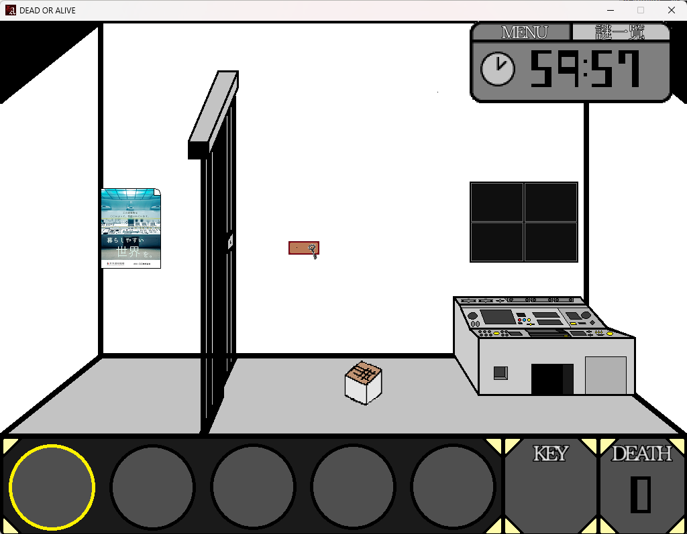
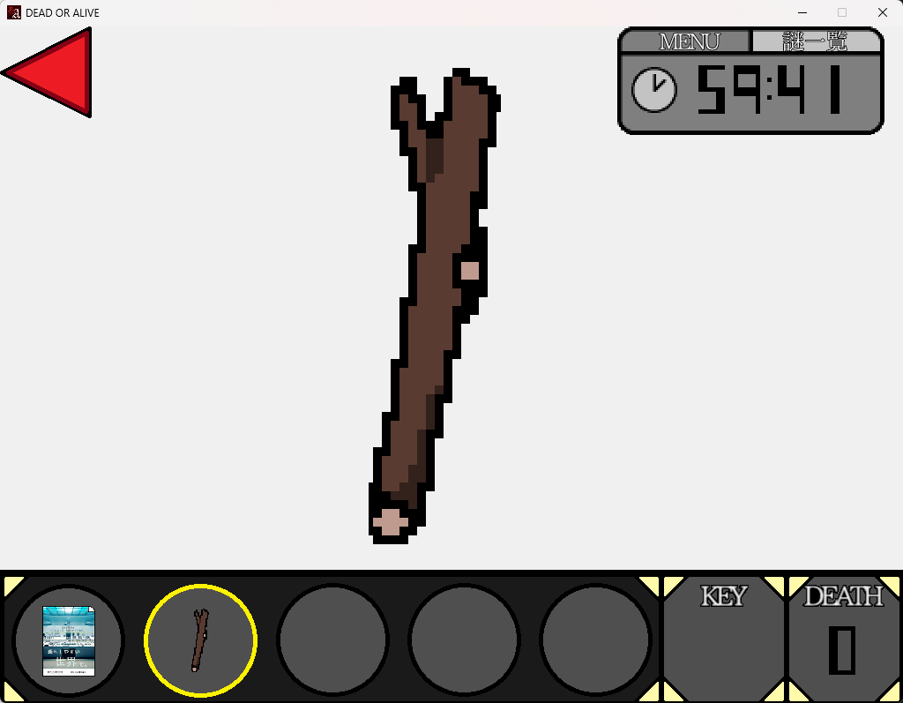
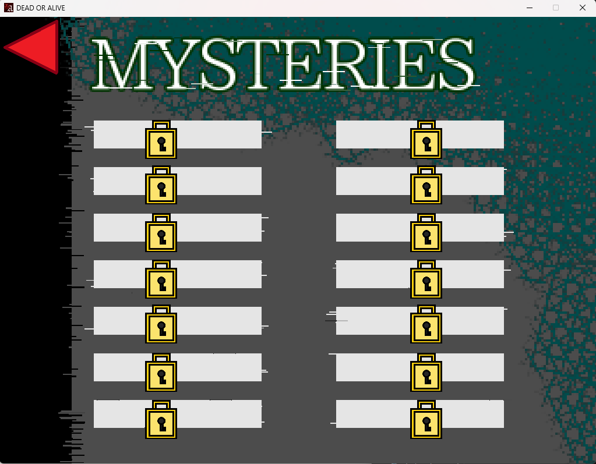
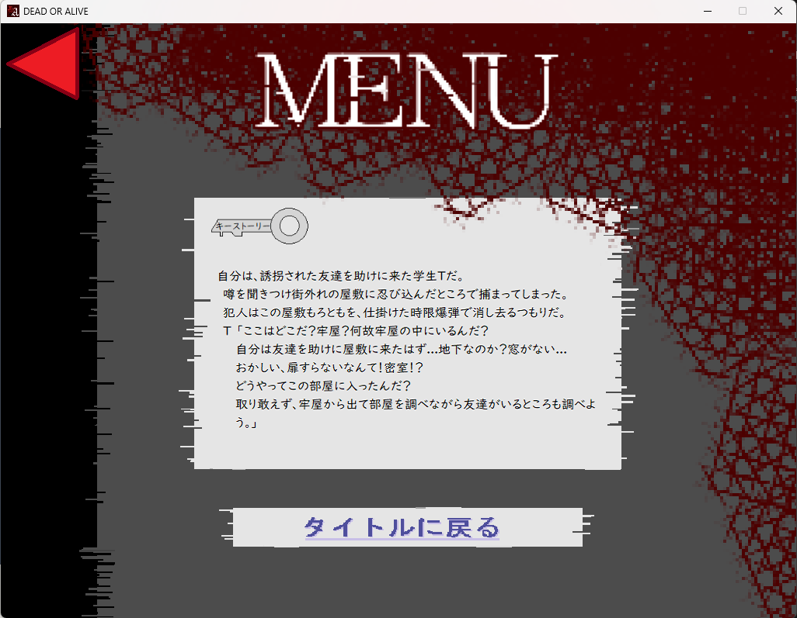
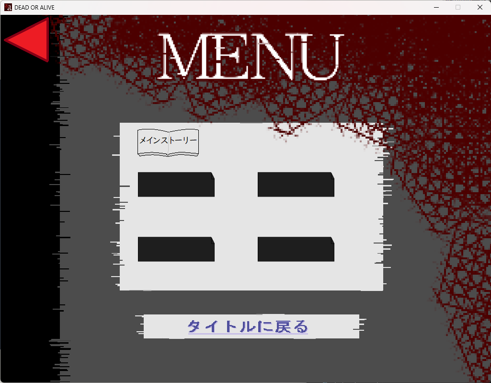

Masahiro Tsukada
Portpolio Site
Home
Profile
Works
Works
DeadorAlive
programming
C# .Net(WindowsForm)
タイトル
ゲーム画面

アイテム画面

謎画面

MENU(ストーリー1)

MENU(キーストーリー)

【説明】
作成の流れ
ゲーム案を考案
↓
謎解きなどの部屋構成など設定
↓
基盤システムを作成(私)
↓
汎用的な部屋のギミックを全員で作成
↓
マニュアルや動画を作成
4人メンバーで約半年作成を行った脱出ゲーム。
部屋数(17)やギミック(40ぐらい)とボリュームがある作品になっております。
アイデア出しなどは放課後などや休みに集まって考案をして固めていきました。その後は部屋のギミックやインベントリなどの基盤となるシステムを私が作成を行い汎用的に作成できるようにしてもらいました。 その後は休みでも朝から晩までDiscordなどで作業を行って開発を行っていきました。
半年という期間で初めての共同制作でしたが良い経験になりました。
▲
TOPへ戻る
◀
Worksへ